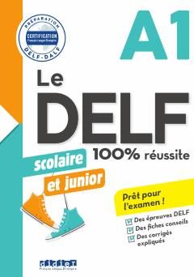

LDDELF A1 imtihoniga tayyorgarlik ko'rish uchun maxsus o'quv qo'llanma.
Ushbu qo'llanma DELF A1 (scolaire et junior) imtihoniga muvaffaqiyatli tayyorgarlik ko'rish uchun mo'ljallangan. Kitob tinglab tushunish, o'qish, yozish va gapirish ko'nikmalarini rivojlantirishga qaratilgan amaliy topshiriqlar va tavsiyalarni o'z ichiga oladi. Undan mustaqil ravishda yoki o'qituvchi rahbarligida dars jarayonida foydalanish mumkin.